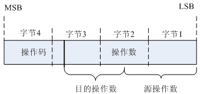
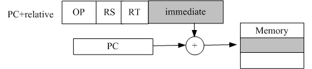
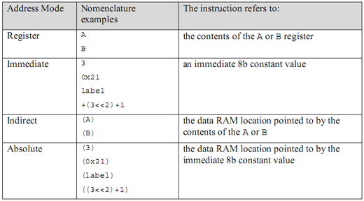
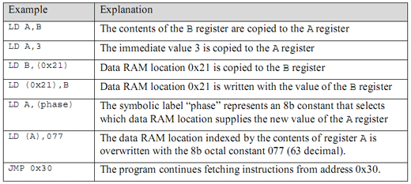

CPU体系架构-寻址方式
在这里，主要是要说明什么是寻址方式。以及每一种CPU为什么使用这样的寻址方式。在说明什么是寻址方式之前，首先需要了解指令的构成，或者说指令的编码格式。
指令编码格式
一条指令（指的是机器码）由操作码（opcode）和操作数（operand）构成。操作数可以是1个，也可以是多个，甚至可以没有。操作码则是每一条指令都必须有。操作码表示该指令要做什么动作，例如跳转，加减等等。操作数则表示操作对象，操作数可能还会分为目的操作数和源操作数。操作数当然是一个数字，该操作数可以由多种来源，例如寄存器，存储器或者立即数。本节介绍的处理器的寻址方式就是讨论指令中操作数的来源问题。

每一条指令（指的是机器码）一般对应一条汇编语句（指的是使用汇编语言书写的一条指令），所以我们一般就将指令等同于汇编语言，没怎么关心指令的概念。在学习寻址方式时，更加关注的是指令本身。也有一条汇编语句对应多条指令的情况，在编译时，汇编器会将该汇编语句转化成对应的多条指令。
寻址方式
指令编码中，用来说明操作数来源和操作数构成存储器地址的方法，叫做寻址方式，英文为Addressing Mode。寻址方式是由处理器的指令编码直接决定的，是处理器体系架构的一部分，所以我们一般叫做xxx处理器寻址方式，例如8086寻址方式，MIPS寻址方式。寻址方式是学习任何一种汇编语言的起点。
总之，处理器的寻址方式就是讨论指令中操作数的来源问题。
根据操作数的来源不同分类，寻址方式一般可以分为存储器方式和非存储器方式。存储器指的是内存等能够被CPU直接寻址到的存储空间。很多时候，我们更加关注存储器方式的寻址。
非存储器寻址方式
非存储器寻址一般有寄存器寻址，立即数寻址。对于x86，还有隐含寻址，IO寻址等。
立即数寻址是所有的处理器都支持的。操作数直接存放在指令编码中，而不需要借助于寄存器，存储器等。CPU在读取完一条指令之后（假设是32bit的指令），首先从该指令中获得操作码（假设是高12bit），知道自己要执行什么操作。CPU根据操作码判断是立即数寻址，那么指令直接获取指令中的立即数（假设是低20bit），然后执行相应的操作。这就是整个立即数寻址的过程。
寄存器寻址也是所有的处理器都支持的。操作数存放在寄存器中，指令执行时无需访问总线（也就是内存等外设），速度快。RISC处理器使用更多的寄存器，并且所有的运算都只操作寄存器中的值，就是为了加强寄存器寻址方式。
另外，专门针对x86体系架构，还有隐含寻址和I/O寻址。隐含寻址又叫做固定寻址。例如PUSH，POP指令，目的操作数栈顶单元为隐含寻址。I/O寻址仅仅用于输入/输出指令IN，OUT的操作数中。我们知道，在RISC的处理器中，没有专门的入栈出栈指令，也没有I/O端口操作指令，所以也就不会有以上两种寻址方式。
存储器寻址方式
存储器寻址就是用来说明如何将存储器单元作为指令的操作数。从指令的角度来说，就是指令如何操作到存储器单元中的数值。
对于x86处理器，有多种存储器寻址方式：
- 直接寻址
- 间接寻址
- 基址寻址
- 变址寻址
- 基址加变址寻址
对于RISC处理器，例如ARM/MIPS，需要寻址到内存的，其实主要是load/store指令（算术逻辑指令只能够操作寄存器中的值）。所以说，RISC处理器的存储器寻址方式，其实就是load/store寻址方式。
MIPS的load/store寻址方式
MIPS处理器的load/store寻址方式只有唯一的一种，那就是base_reg+offset。（注：对于浮点的load/store，还有另外一种寻址方式，reg+reg）。
lw $1, offset($2)
其中，$2为32位的寄存器，offset为编码在指令中的一个有符号16位整数。所以，寻址的范围是-32768~32767。任何其他形式的汇编语言写法，最后都会转化成这种模式的寻址方式。具体可以参考《See MIPS Run》P。
ARM的load/store寻址方式
ARM处理器的load/store有两种，一是单寄存器的load/store，另外是多寄存器的load/store。其中比较特殊的是多寄存器的load/store，一条指令可以同时把多个寄存器的的值store或者load，这是在MIPS上没有的。在讲述ARM的load/store寻址方式时，主要是指单寄存器的load/store寻址方式。
ARM的单寄存器load/store寻址方式有三种：
- 回写前变址寻址
- 前变址寻址
- 后变址寻址
其实，本质上都是base_reg+offset的寻址方式，和MIPS没有差别。之所以有以上3个不同，主要看：寻址的内存单元地址，是使用的base_reg还是base_reg+offset；base_reg是否会被base_reg+offset的值覆盖掉。可以说，MIPS就是只有其中的一种，寻址的内存单元使用的是base_reg+offset，base_reg是不会被base_reg+offset的值覆盖掉的。
另外，ARM的load/store寻址中，offset是一个编码在指令中的12位的有符号数。所以，寻址的范围是4K大小。这是和MIPS不相同的地方。
跳转指令的寻址方式
寻址方式只有非存储器寻址和存储器寻址两种，跳转指令的寻址应该属于存储器寻址的一种。由于其特殊性，所以这里特别拿出来说明。
在上面介绍RISC的存储器寻址时，我们只介绍了load/store寻址方式。那么，是不是说RISC的存储器寻址就只有load/store寻址呢？当然不是，这里介绍的跳转指令寻址就是另外一类存储器寻址。
MIPS处理器的跳转指令寻址，采用的是程序指针（PC）+偏移量的方式。你也许会迷惑，MIPS不是没有程序指针（PC）这个寄存器吗？是的，但是并不能说MIPS就没有程序指针的概念，只是程序指针的值对于程序员是不可见而已（也就是没有一个专门的PC寄存器）。

例如：bal label 其中，label为汇编中某个标签。和load/store的寻址方式一样，立即数也是16位的有符号型整数，寻址范围是64K。
有关跳转指令的细节，请参考CPU体系架构-指令系统。
8位单片机寻址方式
在这里简单介绍一下8位处理器（一般我们就称之为单片机或者MCU）的寻址方式。通过对比8位处理器和32位处理器，我们可以更加深刻的了解到指令长度，指令编码对寻址方式的影响。
下面以集成在SOC中的一个8位的处理器LED Processor为例，对于其他的8位处理器（例如经典的51单片机），基本上原理是一样的。对于所有8位处理器，由于缺少指令位来编码所有的寻址方式（一条指令只有8位，其指令位也就是8个bit），所以并不是所有的指令都支持这些寻址方式。
由于8位处理的寻址方式较少，所以我们不在区分存储器寻址和非存储器寻址。

下面，就8位存储器寻址，使用一些实际汇编指令来举例。注意，在考虑寻址方式时，心中想的一定是机器指令，而不是汇编语言。
